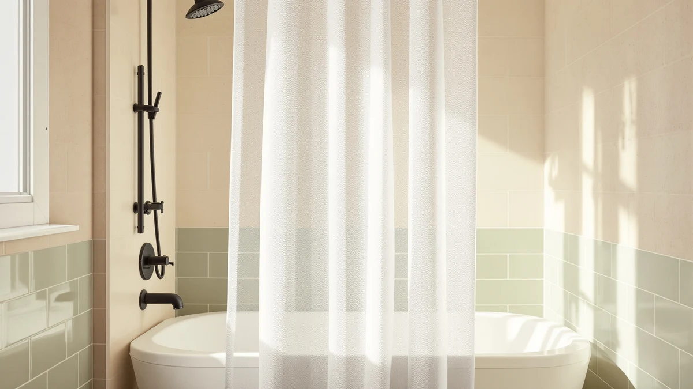

How to Clean Shower Curtains with Mold: Complete Guide (2026)
Prices and picks verified as of October 2026. Independent, reader-supported reviews.


Things to Know Before You Buy
- Check the fabric before you treat it. Polyester and nylon curtains tolerate hot water and oxygen bleach, but cotton and linen blends can shrink or fade if you don't stick to a cold, gentle cycle.
- Skip chlorine bleach on colored or printed fabric. It strips dye fast and weakens synthetic fibers over repeated washes, while oxygen-based bleach lifts the same mold without the damage.
- Pretreating beats scrubbing once mold has set. A 15 to 20 minute vinegar or oxygen bleach soak loosens spores from the weave before the wash cycle does the rest of the work.
- Air flow afterward matters as much as the wash. A curtain that dries bunched against the shower wall traps moisture in the folds, which brings mold back within days of a clean wash.
- Mold worked deep into the weave may be past saving. If gray or black staining doesn't lift after a full wash, replacing the curtain with a quick-dry fabric pick below is the more practical move.
How to clean shower curtains with mold comes down to matching the right treatment to the fabric, since a polyester or cotton curtain calls for different ingredients than a plastic liner, and the wrong combination can set a stain instead of lifting it.
We researched manufacturer care guidance and verified owner reviews across dozens of fabric shower curtains to build a method that works on polyester, cotton-blend, and waffle-weave fabrics without bleach damage. Expect to spend about 40 minutes from pretreatment to a curtain that's rehung and drying clean, using ingredients most people already keep under the sink.
What You'll Need
- Supplies: white vinegar, oxygen-based bleach, and baking soda for treating mold on the fabric shower curtain
- Tools: a soft-bristle scrub brush and a washing machine or large basin
Step 1: Inspect the curtain and check the care tag
Unhook the fabric shower curtain from the rod and lay it flat on the bathroom floor or over the tub edge where you have full light. Mold on fabric often spreads along the bottom hem and inside the folds near the rod, areas that stay damp longest after each shower, so look there first before treating the whole curtain.
Find the care tag sewn into the side seam and read it before touching a cleaner. Polyester and most synthetic blends tolerate a warm or hot machine wash, while cotton, linen, and curtains with decorative trim often call for a cold, gentle cycle to avoid shrinking or color loss.
Note how deep the mold has set in. Surface spots that wipe away with a damp cloth respond well to the pretreatment in the next step, but mold that's turned the fabric itself gray or black in a pattern has likely worked into the fibers and may not fully come out no matter how long you scrub.
Step 2: Pretreat the mold spots
Mix equal parts white vinegar and warm water in a spray bottle for polyester and nylon curtains, or dissolve oxygen-based bleach in warm water per the label if the fabric is cotton or a blend that can't handle vinegar's acidity well. Saturate each mold spot and let it sit for 15 to 20 minutes.
For spots that stay dark after soaking, work a small amount of baking soda into the damp fabric with a soft-bristle brush using circular motions. The mild abrasion lifts surface mold without damaging the weave the way a stiff-bristled brush or scouring pad can.
Rinse the pretreated areas under warm running water before loading the curtain into the wash. Combining undiluted vinegar or oxygen bleach with laundry detergent can reduce how well the detergent lathers and leave a chemical smell trapped in the fabric.
Step 3: Machine wash on the hottest safe setting
Load the shower curtain into the washing machine with two or three old towels and run it on the hottest water setting the care tag permits, adding a scoop of oxygen-based bleach powder alongside your regular detergent. The towels create friction against the fabric that the machine's agitation alone doesn't provide.
Keep the curtain on its own load rather than mixing it with other laundry. Mold spores that come loose during the wash can transfer onto other fabric, and a curtain-only load also lets you run a longer cycle without worrying about shrinking anything else.
If the care tag restricts the curtain to cold water or hand washing, fill a bathtub with warm water and a capful of oxygen bleach instead, and scrub each section with the brush, rinsing the brush between passes so you're not redistributing spores across the curtain.
Step 4: Dry it fully extended
Hang the curtain back on the shower rod immediately after the wash and spread it out so no section folds over another. Overlapping fabric traps moisture between the layers, which recreates the damp conditions mold needs within days of a clean wash.
Run the bathroom exhaust fan or crack a window for several hours, and avoid closing the curtain until the fabric is dry to the touch along the bottom hem, the last section to dry and the first place mold reappears.
Skip the clothes dryer unless the care tag specifically allows it. Heat sets any detergent residue left in the fibers and can shrink a curtain enough that it no longer reaches the tub, undoing the fit you started with.
Step 5: Maintain it between washes
Run a dry towel down the curtain after the last shower of the day to remove standing water before it has a chance to sit. Mold needs sustained moisture to establish itself, and a quick wipe-down removes most of what led to the buildup in the first place.
Leave the curtain spread open across the rod instead of pushed to one side when the bathroom isn't in use, and keep the fan running for ten to fifteen minutes after every shower so humidity has somewhere to go.
Plan on repeating the full wash every three to four weeks for a household that showers daily, and more often in a bathroom with poor ventilation or hard water, since both speed up how fast mold spores take hold on fabric.
Common Mistakes to Avoid
The most common mistake when treating mold on a fabric shower curtain is reaching for chlorine bleach instead of an oxygen-based alternative. Chlorine bleach strips color from printed and dyed fabric fast and can weaken synthetic fibers enough that the curtain develops holes along the hem within a few wash cycles.
Washing on a cold, gentle cycle because it feels safer is a close second mistake. Cold water does little to kill mold spores embedded in the weave, so the curtain can come out of the wash looking clean while surviving spores regrow within a week. Check the care tag and use the hottest setting it allows.
Skipping the pretreatment step and going straight to the machine also falls short. A quick wash dilutes the vinegar or oxygen bleach before it has time to break down the mold, so spots that looked promising after soaking often reappear faintly once the curtain dries.
Letting the curtain dry bunched against the shower wall undoes the wash entirely. Folded fabric traps water between the layers, and that trapped moisture is exactly what surviving spores need to recolonize, often faster than the original mold took to form.
Finally, treating a curtain with mold worked deep into the fibers as salvageable wastes time. If the fabric has grayed or stained in a pattern that doesn't lift after a full wash cycle, replacing the curtain is the more practical move than repeating the same treatment on fabric that's already lost the fight.
Our Top Picks
If your current curtain's mold has set in for good, these fabric picks dry fast and resist the buildup that caused the problem in the first place.

Editor's Pick
eachope Extra Long No Hooks
Owners report this extra-long polyester curtain dries quickly enough after each shower that mold rarely gets a foothold, and the no-hook design means one less seam for spores to collect in.
$35.99
Check Price on Amazon
Best Value
River Dream No Hook Long
At a lower price than most hookless curtains, reviewers consistently note this one holds up to weekly hot washes without the fabric thinning, which matters on the aggressive cycle mold treatment calls for.
$26.99
Check Price on Amazon
Premium Choice
Dynamene Ringless Waffle Weave Fabric
The waffle-weave texture sheds water faster than a flat weave, according to verified buyers, so it spends less time damp between showers than the smoother curtains it's replacing.
$21.99
Check Price on AmazonCan mold be removed from a fabric shower curtain?
Yes, in most cases.
What is the best homemade solution for mold on shower curtains?
A vinegar and warm water soak works well on polyester and nylon curtains, while oxygen-based bleach dissolved in warm water is gentler on cotton blends and colored fabric that vinegar's acidity can fade.
Frequently Asked Questions
Can mold be removed from a fabric shower curtain?
Yes, in most cases. Surface mold lifts with a vinegar or oxygen bleach soak followed by a hot machine wash, though mold that has grayed or stained the fabric in a set pattern may not fully come out.
What is the best homemade solution for mold on shower curtains?
A vinegar and warm water soak works well on polyester and nylon curtains, while oxygen-based bleach dissolved in warm water is gentler on cotton blends and colored fabric that vinegar's acidity can fade.
Can you use bleach on a fabric shower curtain to kill mold?
Avoid chlorine bleach. It strips color from dyed and printed fabric and weakens synthetic fibers over repeated washes. Oxygen-based bleach kills the same mold without the fading or fiber damage.
How often should you wash a shower curtain to prevent mold?
Every three to four weeks for a household that showers daily, and weekly in a bathroom with poor ventilation or hard water, since both conditions speed up how fast mold spores take hold.
Why does mold keep coming back after washing the curtain?
Usually because the curtain dried bunched against the wall or the bathroom fan wasn't run long enough afterward. Trapped moisture between folds recreates the damp conditions mold needs within days of a clean wash.
Verdict
Knowing how to clean shower curtains with mold comes down to matching the treatment to the fabric, pretreating with vinegar or oxygen bleach instead of chlorine bleach, washing on the hottest safe setting, and drying the curtain fully extended instead of bunched against the wall. Skip any one of those steps and mold works its way back within a week or two, no matter how thorough the scrub was.
Follow the five steps above and most polyester, nylon, and cotton-blend curtains come out looking close to new, provided the mold hadn't already set into the fibers before you started. If yours is still graying or staining after a full wash cycle, replacing it is the more practical move than repeating the same treatment on fabric that's already lost the fight. The eachope Extra Long No Hooks is the easiest option to keep mold-free going forward, since owners report it dries fast enough after each shower that spores rarely get the moisture they need to take hold.